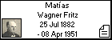
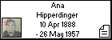
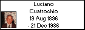
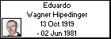

  


Eduardo Daniel Wagner Cuatrochio
Born: 30 Oct 1956, Azul - Buenos Aires - Argentina
Married 15 Dec 1979, Azul - Buenos Aires - Argentina, to Mónica Graciela Perez
Occupation: Bancario - Sistemas
Foto tomada el 04/11/2006
|
A partir de un regalo de mi señora en Octubre de 1998, el libro "Los Abuelos Alemanes del Volga" de Alberto Sarramone, comienza mi inquietud y curiosidad sobre mis antepasados, buscando datos y preguntando a familiares que aún no conocía, mediante fotos, documentos, fechas de fallecimiento en el Cementerio de Hinojo, Museo de Colonia Hinojo, etc.-
|